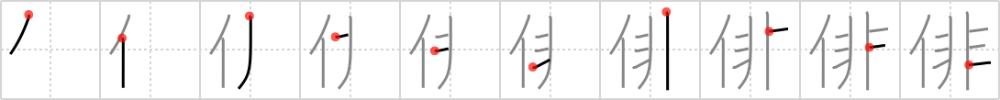

俳
← →
haiku

Reading:
On-Yomi: ハイ
Heisig story:
This character is used for the haiku, the 17-syllable poem that is one of Japan's best-known literary forms. Its elements: person .. . jail cell.
Koohii stories:
1) [dingomick] 9-9-2007(275): I pity the fool/ Who put me in this jail cell/ I pity the fool. (Credit taijuando).
2) [taijuando] 21-5-2006(119): I pity the fool/ Who put me in this jail/ I pity the fool.
3) [Katsuo] 8-4-2007(56): Person is put in jail for writing a haiku with the wrong number of syllables.
4) [lunairejam] 8-10-2007(20): While in jail, some people find Islam, but Mr T finds haiku.
5) [Raichu] 20-9-2007(20): A person stuck in jail has nothing better to do than to compose haiku.